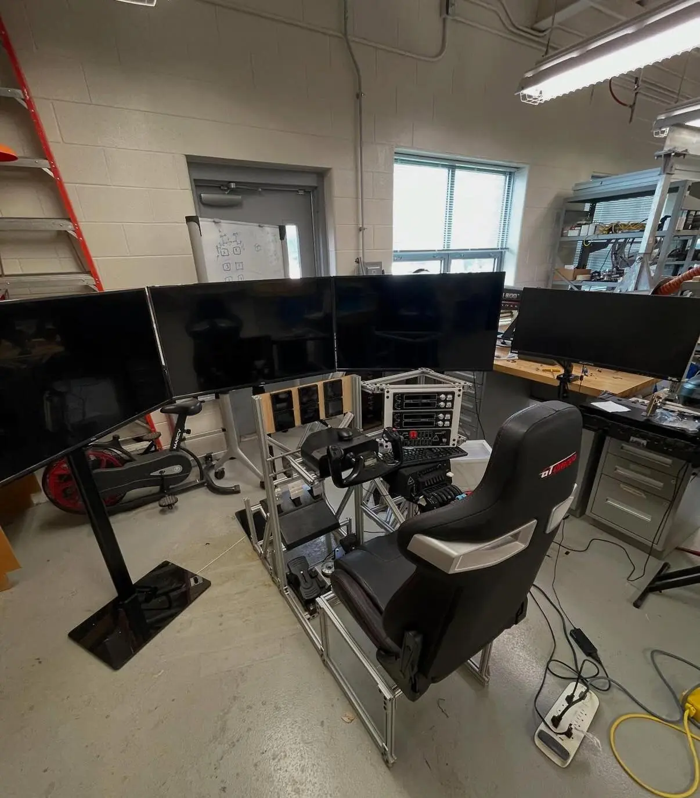
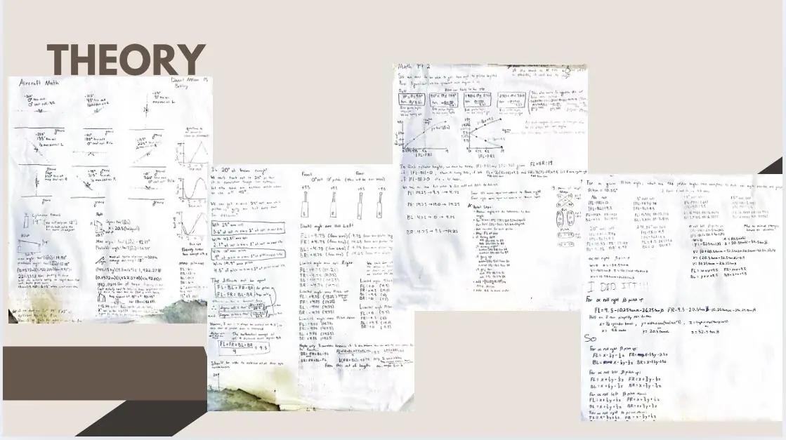
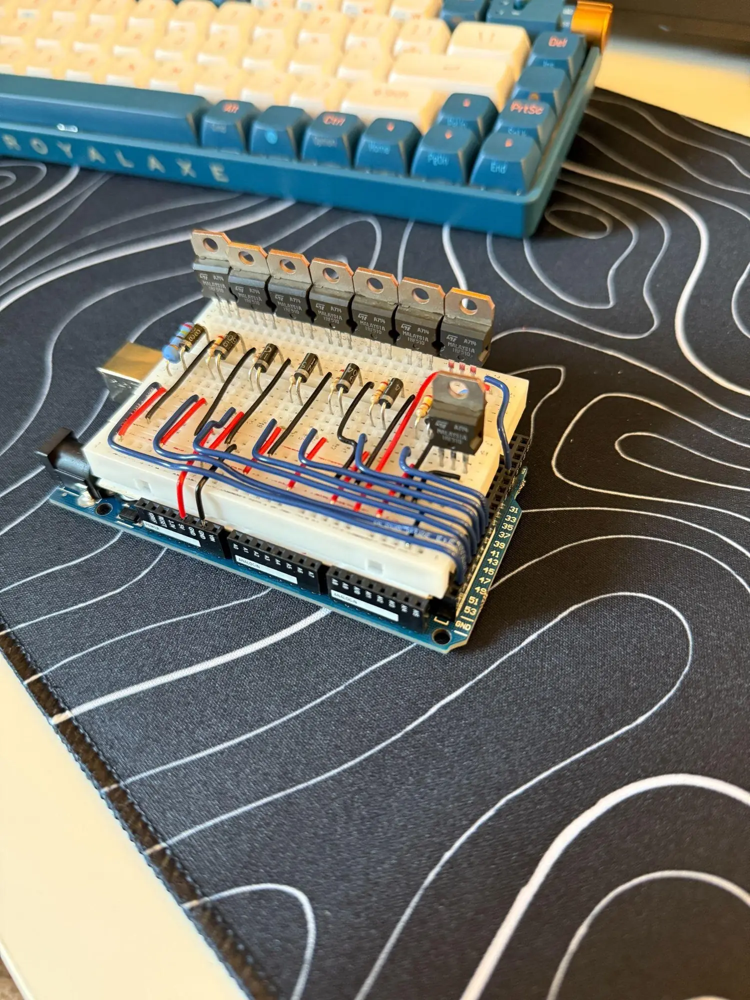
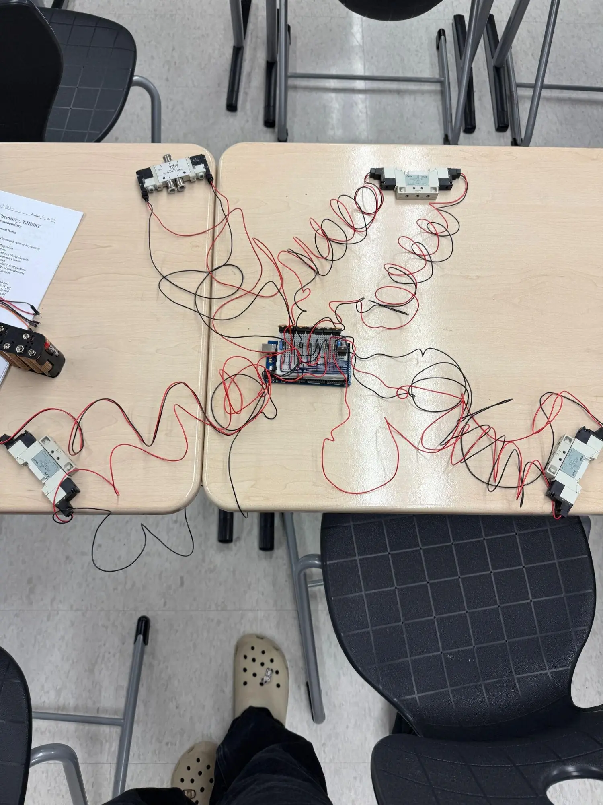
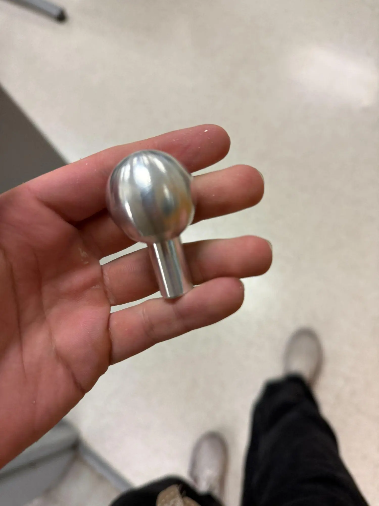
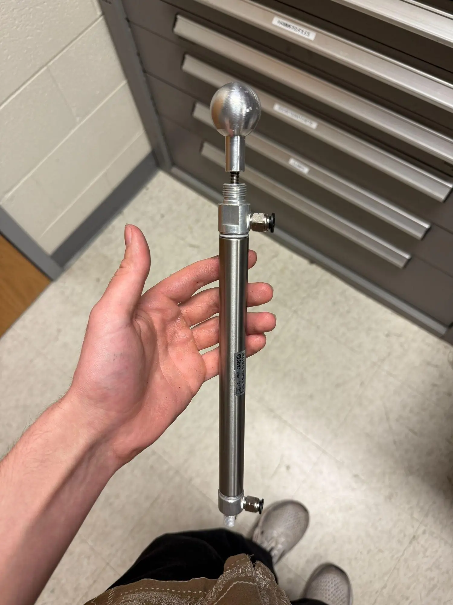
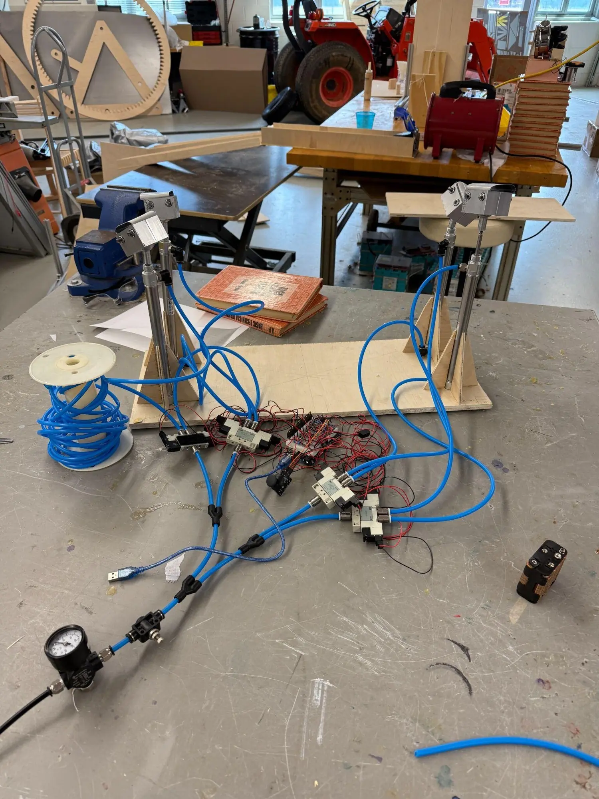

All projectsSheet 02 · Systems · 2024
Two-axis hydraulic flight simulator
Two of us set out to put a cockpit on a platform that pitches and rolls with the aircraft on screen. We built every link in the chain, from simulator telemetry to machined aluminum, and proved it on a quarter-scale pneumatic prototype.
- Team
- Two students
- Scope
- Kinematics, control code, electronics, CAD/CAM, CNC machining and assembly, shared across the team of two
- Output
- ¼-scale pneumatic prototype · 31-page research paper · symposium presentation
- Tools
- Python · X-Plane · TinkerCAD · CAD/CAM · CNC mill + lathe · FEA
- Status
- Prototype built and demonstrated · hydraulic platform not completed
System map
01 — The brief
A cockpit that moves with the aircraft
A screen can only show motion. We wanted the pilot to feel it, with a platform under an existing simulator cockpit driven by hydraulic cylinders. To prove the kinematics, control, electronics and joints before committing to hydraulics, we first built it at a quarter scale with pneumatic stand-ins.

02 — Kinematics
From pitch and roll to four piston lengths
For any target attitude, each actuator has exactly one correct length. We derived the inverse kinematics by hand and then pushed the same model further, to forces, accelerations, jerk and inertia. The resulting load cases became the FEA inputs for the load-bearing joints.

Aircraft attitude scaled to platform angles: ±90° in the simulator becomes ±24.9° of roll and ±10.3° of pitch.
Height differences across the 20.5 spacing between left and right pistons and the 52.5 spacing between front and back.
Each piston’s target from x = 9.5, with the signs set by which way the aircraft rolls and pitches.
Every target shifts so the four average 9.5, so the platform tilts about its centre.
Drag the view to turn it
- Platform roll α
- Platform pitch β
Attitudes the stroke allows
Every piston within 0–19Reached by the mapping
Drag the dot to set the platform directly, including the extra roll the mapping leaves unused.
03 — Control software
Telemetry in, piston targets out
X-Plane streams aircraft attitude over UDP. The Python listener unpacks each DREF and DATA packet, passes pitch and roll through the kinematics routine, compares each piston’s target with its current position, and actuates to close the gap.
The proportional logic was written for the hydraulic system. The pneumatic prototype ran simpler on/off control.

04 — Electronics
Switching the valves
We laid out the circuit in TinkerCAD, built it on the bench, and then moved it to a custom PCB that connects the controller to one solenoid valve per actuator through MOSFET switching channels.



05 — The ball joint
Machined, toleranced, tested by hand
Each actuator meets the platform at a ball joint that has to articulate freely without slop. An aluminum ball is captured between two machined halves, closed with a threaded rod and nuts. I produced GD&T-toleranced drawings, programmed the toolpaths in CAM, and cut the parts from 6061 aluminum on a CNC mill and lathe.



06 — Assembly and test
A working quarter-scale prototype
Electronics, pneumatics and machined parts came together on one plywood base. Four cylinders extend and retract independently on command. We demonstrated the prototype to the laboratory director to secure funding for the hydraulic system.

Status
Documented, demonstrated, unfinished
We documented the design, analysis and build in a 31-page research paper and presented it at a final symposium. Weekly milestones were tracked in a project journal.
The full hydraulic platform was left for the future researchers at TJHSST to pursue once funding is secured.